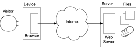

2025-02-01
Choosing a Computer History Website Host
This page discusses how to pick a website host that will support a history oriented web site. (it doesn't cover using blogs, forums, Wikis, or all-in-one site publishing platforms; these might work instead.)
My general thoughts on history websites are at Creating a Computer History Website.
This page is a DRAFT. Some areas marked xxx are not complete.
How The Web Works
A web host is a computer that runs a program called a web server that sends your web page data to visitors, who view your pages in a web browser. The web page data is written in HTML.

The host computer has to be running and connected to the Internet all the time, so that visitors can see your pages whenever they request them. The host computer runs a web server program that listens for requests from the Internet, finds the files needed, and sends back response messages.
One host computer can do this for many small websites; a big busy website may be served by many host computers. (Computers that run all the time and respond to requests are often called servers.)
Pick a Strategy
The best solution will depend on your situation. Your budget, the time you have to spend, your expected traffic, and your expertise are the main factors determining your choice.
Choose the best platform strategy for you. Make a table like this:
| Strategy | Work | Cost | Skill | Features | Responsiveness | Reliability |
|---|---|---|---|---|---|---|
| All-in-one acct | w | $$ | ** | f | R | 99 |
| Private computer | wwwww | $$$ | ***** | ffff | RR | 9 |
| Virtual machine | wwww | $ | *** | ffff | RRRR | 9999 |
| Shared account | www | $ | * | fff | RRR | 9999 |
Set goals for cost (e.g. dollars per year), time and effort for routine management (e.g. hours per week), time and effort to set up (e.g. hours), time and effort to update a page (seconds), ability to expand (limits, cost to change them), site correctness (W3C Validator), site accessibility (e.g. score on EXPERTE.com accessibility checker), site attractiveness (how measured?), site responsiveness (e.g. milliseconds for first load), delay and cost to recover from problems (by type).
To choose a strategy, you can trade off between these objectives.
(The usual Management Decision Skills approach is to choose your MUSTs and your WANTs, eliminate any choice that doesn't have all your MUSTs, score the WANTs and look at the top few choices.)
Implementation Strategies
There are different ways to accomplish your goals, such as using
- An account at a website hosting service, e.g. SquareSpace.
- An account on a web server shared among many sites, at an Information Service Provider (ISP).
- A web server dedicated to your site, on
- a virtual machine at an ISP, e.g. Amazon Web Services or another ISP
- a separate computer co-located at an ISP or institution
- your own computer on your premises
For example, some visitors will give up on a site that is too slow, but there is a cost to have a highly responsive site.
Operating your own server will give you more control of details, but require more learning and commitment on your part.
Using a hosting service that locks you into their web publishing platform can reduce the amount of your work to put up a site, but limit your design flexibility, and may cost more.
No matter what strategy you choose, you may have to alter it later. Because service providers, site generation programs, and hardware may change or have to be replaced, you need to keep good notes and be able to start over if necessary. Your audience may want to get their information in new ways and stop using old modes.
Example: in the mid 1990s, the multicians.org site used small graphics and showed the size of pages next to links, because users were frustrated if clicking a link led to a long delay. Pages were designed to look good on a 640x480 pixel screen with a limite number of colors. Page layout was simple.
Your Personal Computer
This discussion assumes that you have a personal computer already, and know a little about how to do things with it, and will use it to create web sites. Some skills you should know are:
- Browsing the Web
- Editing a text file
Things you will want to figure out
- What resources are included in a vendor package. (e.g. disk space, tools, web log access)
- Support. Who will help you if something doesn't work?
- Provider's bandwidth, responsiveness, redundant connections, historical uptime/reliability, and fault tolerance
- Provider's limits to future growth and success
- Features supported: Do you need server side programs, databases, email handling?
Costs
You will have to pay for your share of
- Computer server hardware. You can pay by the minute or the month, or you might buy a whole computer. Sharing hardware among many people reduces direct cost, but introduces expense for coordination.
- Keeping the hardware running. If it breaks, somebody has to know how to fix it.
- Communications hardware. (Routers, modems, switches, network appliances, DNS servers, etc.)
- Communications bandwidth: that is, upstream Internet connections.
- Backup.
- Administration and support, trouble shooting, advice. Business continuity.
- Name administration. If your site has its own domain name, you pay for a registrar to keep records and make sure nobody else has it.
You can put information on the web using "free" website hosting services. The service pays the costs, and puts advertising on your page to support your usage. They may hope to upsell you when you want fancier features, more space, more traffic.
You can register your own domain name for about $10/year. If you have a spare computer that can run all the time, and an Internet connection, that's all you need. If you don't run your own computer, you'll want to get an account from someone. This account can be on a paid hosting service, or on a work or school computer, or you can get an account on a shared computer at an ISP (that's what I have done for over 30 years). You don't need to spend $600/year to publish a web site. Prices for your online services will depend on what is included:
- email. Some hosting accounts include email storage and handling. Features of this service can vary widely.
- Storage space. You may pay more if your site has many large files.
- Bandwidth. Some ISPs charge extra if your site becomes very busy.
- Dedicated IP address.
- Support. Good telephone, on-line, and email support can help a lot.
- Mailing lists. Some ISPs provide tools for sending out newsletters and other communications.
- Databases. Your account may include the ability to store records in a database.
Don't buy features you don't need. There are many other web hosting features needed by companies doing business on the Web, that you probably don't need. Some can raise the complexity and cost of hosting a lot.
Security
You need to understand what could go wrong, and how to avoid security problems. Bad guys may try to
- Prevent visitor access to your site
- Change what your site shows visitors
- Use your site to attack visitors, e.g. install ransomware
- Consume site resources and increasing your bill
- Attack the computer system that hosts your site
- Lower your site's reputation
Keeping your site secure requires care, accuracy, and hard work by someone.
Your Site URL
what is a URL, a domain name, a registrar xxx
cost xxx
One of the basic questions is how you want your site's name to appear to the outside world. Suppose your name is Jones, and you are creating a site about the historic XYZ100 computer. You could choose
- A directory at an existing web site (e.g. https://www.example.com/jones/xyz100/)
- A subdomain of some other site (e.g. https://xyz100.example.edu/)
- Your own domain (e.g. https://www.xyz100.net/), which can be hosted on your own computer, or on an ISP or cloud account.
- Yearly expense. To register a domain name, you pay a fee to a domain name registrar.
- Rights to the name. The company that made the XYZ100 may think it owns the name and not want you to set up a site using its name. They could force you to relinquish the name.
Your site's name will be in your email address. xxx what kind of personal names to use, your privacy xxx DKIM and SPF registation xxx incoming spam filtering
Advertising
xxx there are pitfalls xxx porn, malware xxx reputation
Page Rank
xxx
Hosting Companies
Some companies provide a complete service: hosting your site, registering your domain, handling your email, and providing a page builder interface. You'll pay extra -- which may be worth it if you get good services. If you are considering a service like this, talk with current users of the service about their experience before you commit.
Some hosting companies bundle your domain registration in your account, but they often charge you about twice what you'd pay at other registrars.
(At one point I was looking for an altenative to my current host. I found one company that looked pretty good -- saved me a little money. Then I started figuring out what I would have to do to switch over, and realized that the proposed company didn't help at all with email administration. I would have to spend time learning how to configure and maintain a mail server, and find replacements for my current ISP's spam and malware defenses. I decided not to change anything.)
Host Connectivity
How your web host is connected to the Internet will make a big difference in the performance and availability of your site as seen by visitors.
Multiple and redundant pipes, bandwidth capacity, host loading and traffic xxx
A host computer that has a single connection to a single backbone account can be knocked off the Internet by a component failure anywhere along its path, or a hungry squirrel. Better providers have several backbone connections that don't share any resources. Of course, redundancy costs extra. (I worked with a company whose entire server room was connected to a single provider with one high-bandwidth account. When that connection was destroyed by a backhoe,the company's multiple websites and facilities were inaccessible for almost two weeks.)
Virtual Machines
My first Web account in 1994 was a shared account at an ISP that ran a single Silicon Graphics web server serving pages for multiple user websites. This was an efficient way to use the host machine's resources.
As computers became more powerful, the use of virtual machine monitors (sometimes called hypervisors) allowed ISPs to provide each user a Virtual Machine that had its own separate operating system and software. This is how my sites are now served.
The Virtual Private Server I currently rent has its own Linux OS, with its own copy of Apache and configuration, its own mail server, and its own storage. It is implemented on a server computer with all-SSD storage, and connected to redundant upstream network connections.
Content Management Systems
There are many web  web content management systems (WCMS) and other web site generator tools available,
which can make it easier to get started.
Some are free and some are not.
web content management systems (WCMS) and other web site generator tools available,
which can make it easier to get started.
Some are free and some are not.
Some of these tools provide "themes" that establish a set of visual design rules for a site, generate navigation links, and shield the site creator from the details of HTML and site publishing. Each content management system makes some things easy and others hard to do. If such systems are expertly and conscientiously used, they can eliminate repetitive and error-prone operations and allow authors to concentrate on content. In addition, many such systems provide extensions and features that make it easy to make a good-looking and high-functioning site.
Some content management systems save you from learning HTML: instead they provide a drag-and-drop editor that lets you customize one of their templates. Some of these systems let you specify text in a simplified "markdown" language. These systems are easier to learn but limit what you can do.
Installing and learning a WCMS platform and keeping it updated requires work, and there will be additional cost if your site must later be transferred to some new platform. (I don't use these myself, but some people really like them.)
Some examples of content management systems: WordPress, Drupal, Joomla, GetSimple, phpBB, Movable Type, MediaWiki, Phorum, Geeklog.
See  List of content management systems.
List of content management systems.
Some content management systems have had repeated security attacks and performance problems. See below.
Web Server Software
Most web sites use the Apache web server software to serve web pages. Nginx is an alternative. (I have used both.)
Apache can be configured to allow the use of a .htaccess file that modifies how web requests will be processed. This can be very useful if you want such options as:
- Denying all access to certain visitors based on IP address, referring page, or browser
- Remapping requests from one file to another
- Enabling file compression
Web servers may enable the use of programmability features such as PHP, CGI, JSP, ASP, Tomcat, or node.js. These languages may in turn access database software located on the server side.
Some web servers are able to serve audio and video streams to visitors. If your server doesn't have this ability, then a visitor who tries to access a music or video file has to wait to download the whole file before anything starts playing.
Web servers create log files that record the details of each request they serve. Some shared web server accounts deliver a log extract to each shared account showing the account's web traffic. Other web servers do not provide this data. A Virtual Private Server gives its administrator a log file without needing to do extraction. The log files are useful for analyzing user traffic. I use a log analysis program that I developed myself.
Web server software configuration determines how quickly a server responds to requests, and how well it handles heavy load. There are many factors to consider, and different server versions provide different tools for controlling resource usage and responsiveness. For example, Apache allows administrators to vary the number of worker processes and the caching of recently served files in memory.
Files on a web server machine need to be backed up to support recovery from hardware or software disasters.
In general, users of any host have to have a plan to detect failures and recover from them. The plan should detail responsibility for detection and recovery for different kinds of failures.
A hosting account will have a set of prices for resource usage, and limits on the usage. If a web site is attacked by outsiders, bandwidth charges may increase, or the site may be shut down. Some web hosts limit the amount of CPU a host process can use, so that a software problem doesn't lock up the whole machine.
Some hosting companies that provide web service using Apache allow you to specify a local file .htaccess to set some Apache parameters. This can be very useful. For instance, this may enable you to cause some files on your site to be sent from the server to the user in compressed format, which can make your pages load more quickly.
Content Management Systems Performance
Some web content management systems keep page content in a database, and generate the web page served to a visitor when the page is referenced, by expanding a template. A good thing about this approach are that it's easy to change themes, or items common to all pages, and have the change take effect quickly. On the other hand, generating pages dynamically requires some server-side computation and a database access on every page view, which can make page display slower unless you add noticeable complexity.
Web content management systems sometimes provide other page decoration features like lists of other articles, usage counters, visitor comments, and so on, each of which can result in additional database accesses and template expansions. If a web site that uses these features starts getting a lot of traffic, it may begin to slow down.
Content Managers and Security
Web content management systems like Blogger, Drupal, Joomla, and Wordpress have their own security issues. Many such systems are based on the PHP language and have historically had repeated security problems. Sometimes these exploits arose when site publishers did not quickly install security fixes to their platform or to third-party extensions.
E-Commerce
Setting up a site to sell products or services and take payment for them has additional pitfalls. I have helped a few companies do this, and it was hard. (If somebody says it is easy, be skeptical.) You have to consider security, uptime, integration with other sites or data sources, responsiveness of the support staff, ability to create the look and feel you want, and amount of work you have to do to maintain your site. And more security. If you handle other people's money, your site may be subject to various kinds of operations regulations, and may have to pass recurring financial audits.
Track And Measure Your Traffic
Google provides a service called Google Analytics. It has pros and cons. If you sign up with Google, you can get a monthly report of what Google queries hit your site, and of problems they encountered indexing your site. This is often useful.
Google has another facility that gives you a lot more information, if you include some hidden JavaScript on each of your pages. The downside is that then each of your site visitors is tracked by Google, whether they want this or not. I don't do this on my sites.
Web log analysis programs take the record of which visitors visited your pages and produce various statistics and charts. If you look at visitor behavior, you will find ways to improve your site incrementally. You can use free log analysis programs like analog and webalizer.
- Look at the terms used in searches, as well as searches that sent the visitor to a page that was not useful.
- Analyze the sequence of pages visited in visitor sessions.
- How do visitors enter the site (via search, link, etc)
- At what page do visitors enter the site? Often this is not your main page.
- When do visitors leave (session length, which pages are often the last)
I use Super Webtrax, a log analysis program that I developed myself. I run the program on my Virtual Private Server each day. It operates on the web server log and produces a multi-dimensional analysis of the day's traffic, and cumulative traffic.
updated 2025-02-01 18:29